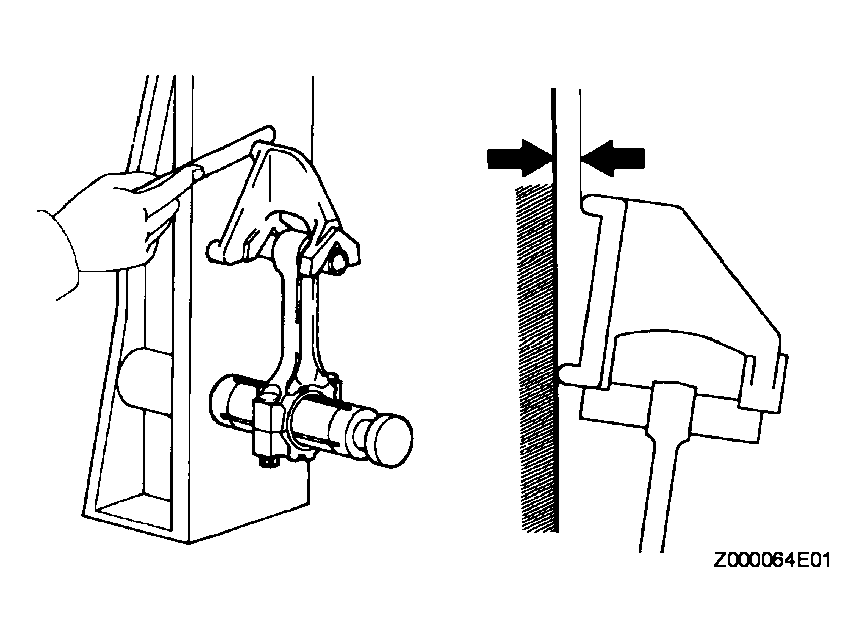
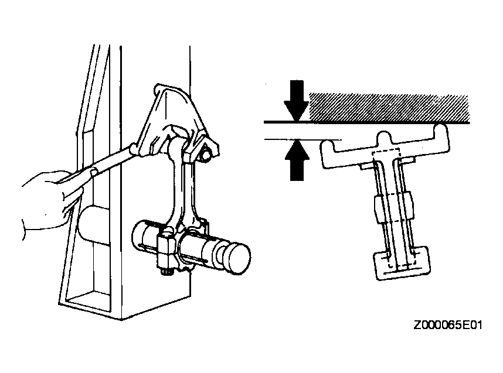
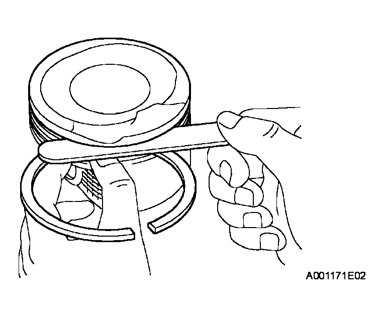
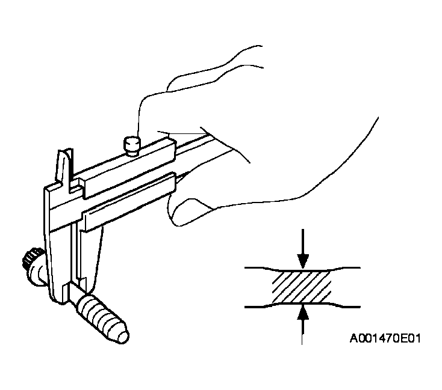
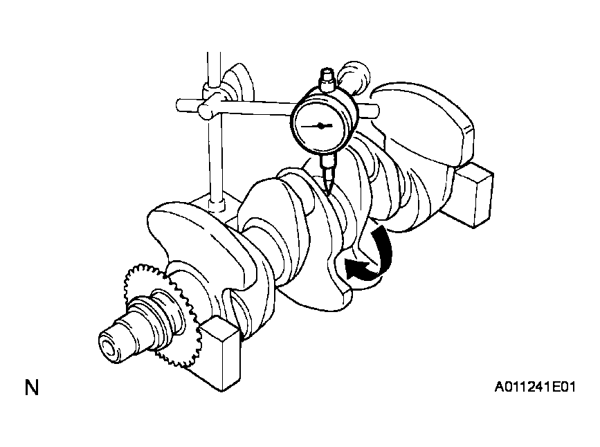
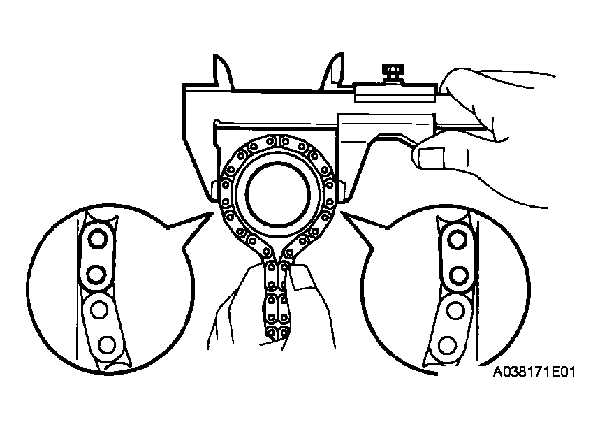
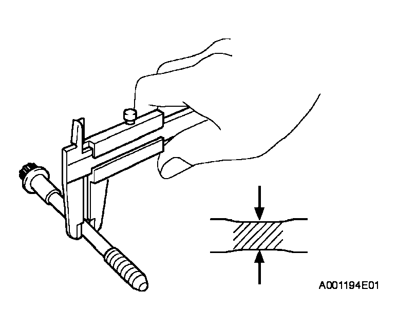

Engine Unit: Inspection
- INSPECT CYLINDER BLOCK FOR FLATNESS (See INSPECTION )
- INSPECT CYLINDER BORE
- Using a cylinder gauge, measure the cylinder bore diameter at positions A and B in the thrust and axial directions.
- Calculate the average of the thrust diameter and axial diameter at the "A" position in the illustration.
- Calculate the average of thrust diameter and axial diameter at the "B" position in the illustration.
Standard diameter: 75.000 to 75.013 mm (2.9528 to 2.9533 in.)
If the value obtained in the step above is not within the range of the standard diameter, replace the cylinder block.
- INSPECT PISTON WITH PIN
- Using a micrometer, measure the piston diameter at right angles to the piston pin center line, and at a position 27 mm (1.06 in.) from the top of the piston head.
Standard piston diameter: 74.945 to 74.955 mm (2.9506 to 2.9510 in.)
- Using a caliper gauge, measure the piston pin hole diameter of the piston.
Standard piston pin hole diameter: 18.013 to 18.016 mm (0.7092 to 0.7093 in.) at 20°C (68°F)
- Using a micrometer, measure the piston pin diameter.
Standard piston pin diameter: 18.001 to 18.004 mm (0.7087 to 0.7088 in.)
- Subtract the piston pin diameter measurement from the piston pin hole diameter measurement.
Standard oil clearance: 0.009 to 0.015 mm (0.0004 to 0.0006 in.)
Maximum oil clearance: 0.050 mm (0.0020 in.)
If the clearance is greater than the maximum, replace the bush. If necessary, replace both the piston and piston pin together.
- Using a micrometer, measure the piston diameter at right angles to the piston pin center line, and at a position 27 mm (1.06 in.) from the top of the piston head.
- INSPECT PISTON CLEARANCE
- Subtract the piston diameter measurement from the cylinder bore diameter measurement.
Standard oil clearance: 0.055 to 0.078 mm (0.0022 to 0.0031 in.)
Maximum oil clearance: 0.08 mm (0.0032 in.)
If the oil clearance is greater than the maximum, replace all 4 pistons. If necessary, replace the cylinder block.
- Subtract the piston diameter measurement from the cylinder bore diameter measurement.
- INSPECT CONNECTING ROD
- Using a caliper gauge, measure the internal diameter of the connecting rod.
Standard connecting rod inside diameter: 17.965 to 17.985 mm (0.7073 to 0.7081 in.)
If the diameter is greater than the maximum, replace the connecting rod.
- Using a rod aligner and feeler gauge, check the connecting rod alignment.
- Check for misalignment.

Courtesy of © TOYOTA, LICENSE AGREEMENT TMS1002Maximum misalignment: 0.05 mm (0.0020 in.) per 100 mm (3.94 in.)
If the misalignment is greater than the maximum, replace the connecting rod assembly.
- Check for twist.

Courtesy of © TOYOTA, LICENSE AGREEMENT TMS1002Maximum twist: 0.05 mm (0.0020 in.) per 100 mm (3.94 in.)
If the twist is greater than the maximum, replace the connecting rod assembly.
- Check for misalignment.
- Using a caliper gauge, measure the internal diameter of the connecting rod.
- INSPECT RING GROOVE CLEARANCE
- Using a feeler gauge, measure the clearance between the new piston ring and the wall of the ring groove.
Standard ring groove clearance
RING GROOVE CLEARANCE SPECIFICATIONItem Specified Condition No. 1 ring 0.02 to 0.04 mm (0.0008 to 0.0016 in.) No. 2 ring 0.01 to 0.03 mm (0.0004 to 0.0012 in.) Oil ring 0.01 to 0.03 mm (0.0004 to 0.0012 in.) 
Courtesy of © TOYOTA, LICENSE AGREEMENT TMS1002If the clearance is not as specified, replace the piston.
- Using a feeler gauge, measure the clearance between the new piston ring and the wall of the ring groove.
- INSPECT PISTON RING END GAP
- Using a piston, push the piston ring a little beyond the bottom of the ring travel, 110 mm (4.33 in.) from the top of the cylinder block.
- Using a feeler gauge, measure the end gap.
Standard end gap
RING END GAP SPECIFICATIONItem Standard Maximum No. 1 ring 0.25 to 0.35 mm (0.0098 to 0.0138 in.) 0.91 mm (0.0358 in.) No. 2 ring 0.35 to 0.50 mm (0.0138 to 0.0197 in.) 1.06 mm (0.0417 in.) Oil ring 0.10 to 0.35 mm (0.0039 to 0.0138 in.) 0.82 mm (0.0323 in.) If the end gap is greater than the maximum, replace the piston ring and oil ring.
- INSPECT CONNECTING ROD BOLT
- Using a vernier caliper, measure the tension portion diameter of the bolt.

Courtesy of © TOYOTA, LICENSE AGREEMENT TMS1002Standard diameter: 6.6 to 6.7 mm (0.260 to 0.264 in.)
Minimum diameter: 6.4 mm (0.252 in.)
If the diameter is less than the minimum, replace the bolt.
- Using a vernier caliper, measure the tension portion diameter of the bolt.
- INSPECT CRANKSHAFT
- Using a dial indicator and V-blocks, measure the circle runout as shown in the illustration.

Courtesy of © TOYOTA, LICENSE AGREEMENT TMS1002Maximum circle runout: 0.03 mm (0.0012 in.)
If the circle runout is greater than the maximum, replace the crankshaft.
- Inspect the diameter.
- Using a micrometer, measure the diameter of each main journal as illustrated.
Standard diameter: 45.988 to 46.000 mm (1.8106 to 1.8110 in.)
If the diameter is not as specified, replace the crankshaft.
- Calculate the taper and distortion of the main journal.
Maximum taper and distortion: 0.02 mm (0.0008 in.)
If the taper and distortion are greater than the maximum, replace the crankshaft.
- Using a micrometer, measure the diameter of each crank pin as illustrated.
Standard diameter: 39.992 to 40.000 mm (1.5745 to 1.5748 in.)
If the diameter is not as specified, replace the crankshaft.
- Calculate the taper and distortion of the crank in.
Maximum taper and distortion: 0.02 mm (0.0008 in.)
If the taper and distortion are greater than the maximum, replace the crankshaft.
- Using a micrometer, measure the diameter of each main journal as illustrated.
- Wrap the chain around the timing sprocket as shown in the illustration.
- Using a vernier caliper, measure the timing sprocket diameter with the chain wrapped.

Courtesy of © TOYOTA, LICENSE AGREEMENT TMS1002Standard sprocket diameter (w/chain): 51.72 mm (2.0362 in.)
Minimum sprocket diameter (w/chain): 50.5 mm (1.988 in.)
NOTE: When measuring the diameter, the vernier caliper must be in contact with the chain roller.If the diameter is less than the minimum, replace the chain and crankshaft.
- Using a dial indicator and V-blocks, measure the circle runout as shown in the illustration.
- INSPECT CRANKSHAFT BEARING CAP SET BOLT
- Using a vernier caliper, measure the tension portion diameter of the bolt.

Courtesy of © TOYOTA, LICENSE AGREEMENT TMS1002Standard diameter: 7.3 to 7.5 mm (0.287 to 0.295 in.)
Minimum diameter: 7.2 mm (0.283 in.)
If the diameter is less than the minimum, replace the bolt.
- Using a vernier caliper, measure the tension portion diameter of the bolt.